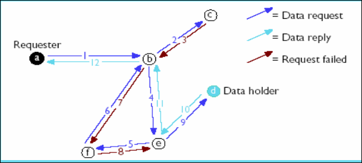
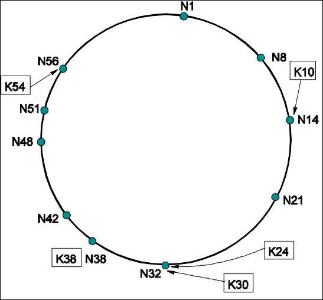

Redes P2P
Info
Muy loco que el colega te chante una presentación en inglés joseada de otra universidad
5.1 El Problema: Arquitectura Cliente-Servidor vs P2P
Para entender P2P, primero debemos mirar que lo que queremos sustituir: el modelo tradicional Cliente-Servidor.
- Modelo Tradicional: Un servidor potente y fiable centraliza los datos. Los clientes solo piden información
- Limitaciones: El servidor es un cuello de botella, un punto único de fallo y es costoso de escalar. Además, los recursos de los clientes (tu ordenador) están desaprovechados.
La computación P2P es el intercambio directo de recursos (procesamiento, almacenamiento, ancho de banda) entre sistemas.
- Democracia: todos los nodos son a la vez clientes y servidores
- Autonomía: no hay una autoridad central ; los nodos entran y salen de la red dinámicamente.
Beneficio Clave: La Escalabilidad. Cuantos más usuarios (consumidores) entran, más recursos (donantes) hay disponibles. El sistema crece orgánicamente con la demanda .
5.2 Primera Generación: Sistemas P2P No Estructurados
Llamamos "no estructurados" a aquellos sistemas donde no hay una regla matemática estricta sobre dónde se guarda cada archivo. La búsqueda es algo caótica o centralizada.
5.2.1 Napster (El origen centralizado)
Aunque revolucionó el intercambio de música, Napster no era P2P puro.
-
Arquitectura: Híbrida.
- Búsqueda: Centralizada. Tú enviabas tu consulta a un servidor central de Napster ("¿Quién tiene la canción X?").
- Descarga: P2P. Una vez tienes la IP del usuario que tiene el archivo, te conectas directamente a él para bajarlo.
-
Problema: El servidor central es un punto único de fallo, un cuello de botella y un blanco fácil para demandas legales
5.2.2 Gnutella (Descentralización total)
Para evitar los problemas legales de Napster, Gnutella eliminó el servidor central.
-
Funcionamiento: Búsqueda por Inundación (Flooding).
- Preguntas a tus vecinos: "¿Tenéis este archivo?".
- Ellos preguntan a sus vecinos, y así sucesivamente.
-
Control: Para que el mensaje no viva eternamente, se usa un TTL (Time To Live) que elimina la petición tras unos cuantos saltos (hops).
-
Problema: Genera muchísimo tráfico de red y no garantiza encontrar el archivo (si está más lejos que el TTL, no lo ves)
5.2.3 Kazaa/FastTrack (El modelo Híbrido)
Aprendiendo de los dos anteriores, Kazaa introdujo el concepto de Super-nodos (Super-peers).
- Jerarquía: No todos los nodos son iguales. Los ordenadores potentes y con buena conexión se convierten automáticamente en "Super-peers".
- Funcionamiento: Actúan como pequeños servidores Napster locales. Los nodos normales suben sus listas de archivos al Super-peer y le preguntan a él.
5.2.4 El Problema del "Free Riding" (El gorrón)
Un desafío social de estas redes es que requieren altruismo. Estudios en Gnutella mostraron que el 63% de los usuarios nunca compartían nada, solo descargaban. El 15% de los usuarios aportaba el 94% del contenido.
5.2.5 Freenet
En las generaciones anteriores (Napster, Gnutella, Kazaa), la identidad era transparente: los usuarios sabían de quién descargaban y los demás sabían quién enviaba una consulta . Esto generaba problemas de privacidad y legales
Freenet surge con un objetivo distinto: el Anonimato.
-
Funcionamiento ("Consultas Inteligentes"):
- Utiliza un mecanismo de descubrimiento incremental .
- Lo más ingenioso es cómo fluyen los datos: La respuesta viaja siguiendo el camino inverso de la consulta.
-
La Ventaja del Anonimato:
- Es imposible saber si un nodo está iniciando una petición o simplemente reenviando la de otro.
- Es imposible saber si un nodo está consumiendo (leyendo) el dato o simplemente reenviándolo.
- Esto crea una "negación plausible" para los usuarios de la red.

5.3 Segunda Generación: Sistemas Estructurados (DHTs)
Las redes anteriores (Napster, Gnutella) no garantizan que encuentres un archivo aunque exista, o son ineficientes. La academia (universidades/investigación) propuso una solución matemática: las Tablas Hash Distribuidas (DHT).
5.3.1 ¿Qué es una DHT?
Una Tabla Hash Distribuida es una clase de sistema distribuido descentralizado que ofrece un servicio de búsqueda (lookup) similar a una tabla hash clásica (pares clave → valor), pero con una diferencia fundamental:
- Distribución: Los datos (pares clave-valor) no están en un solo ordenador. Están repartidos entre todos los nodos participantes de la red.
- Responsabilidad: Cada nodo es responsable de un pequeño rango de claves.
- Enrutamiento: Cualquier nodo puede encontrar eficientemente (
) qué otro nodo tiene el dato que busca, sin necesidad de un servidor central. - Interfaz Genérica: Solo necesitas dos operaciones:
put(key, value): Guarda algo.value = get(key): Recupera algo.
A continuación, los tres algoritmos principales de DHT
5.3.2 Chord (El anillo)
Imagina una mesa redonda gigante o un reloj.
El Círculo Identificador (The Identifier Circle):
- La Mesa: Imagina que todos los ordenadores (Nodos) y todos los archivos (Claves) tienen un número de identificación (ID) único (por ejemplo, del 0 al 100).
- Organización: Los nodos se sientan alrededor de la mesa ordenados por su número (el nodo 5, luego el 20, luego el 38...).
- La Regla de Oro (Sucesor): ¿Quién guarda la llave del archivo número 54? No se la damos al nodo 54 (porque igual no existe), sino al primer nodo que encontremos igual o mayor que 54 siguiendo las agujas del reloj.
- Ejemplo: La clave
K54se guarda en el nodoN56porque es su "sucesor" inmediato en el círculo .
- Ejemplo: La clave

La Tabla de Dedos (Finger Table) - El Atajo:
Si el nodo 1 quiere hablar con el nodo 50, podría pasar el mensaje al vecino de al lado (nodo 2), y este al 3... pero tardaría mucho (
-
Los Saltos: Cada nodo tiene una pequeña agenda (Finger Table) con unos pocos contactos.
-
Matemática de los saltos: En lugar de conocer a sus vecinos inmediatos, conoce a nodos a distancias de potencia de 2 (
). - El dedo 1 apunta a alguien a distancia 1.
- El dedo 2 apunta a alguien a distancia 2.
- El dedo 3 apunta a alguien a distancia 4, luego 8, 16, 32....
-
El Resultado: Con muy poca información (tabla pequeña de tamaño
) puedes cruzar el círculo entero dando saltos gigantes. Cada salto te acerca "a la mitad" del camino hacia tu destino.
El Problema de la Localidad (Network Locality) Aquí viene la crítica de Chord. El anillo es lógico, no físico.
- Imagina que en el anillo, el Nodo 20 es vecino del Nodo 40.
- Pero en la vida real, el Nodo 20 está en Oregón (EE.UU.) y el Nodo 40 está en Utah (EE.UU.), pero para llegar de uno a otro, el algoritmo te hace pasar por el Nodo 80 que está en California o el 41 que está en Nueva York .
- Conclusión: Tus vecinos en el anillo pueden estar en la otra punta del mundo, haciendo que la conexión sea lenta aunque el algoritmo sea rápido.
5.3.3 Pastry (El código postal)
Pastry intenta arreglar el problema de que "mi vecino lógico está en otro continente".
-
La Idea: Funciona como los números de teléfono o códigos postales.
-
El Enrutamiento: Si yo soy el nodo
65a1fcy busco ald46a1c, intento enviar el mensaje a alguien que se parezca un poco más al destino.- Primero busco a alguien que empiece por
d... - Luego a alguien que empiece por
d4... - Luego
d46....
- Primero busco a alguien que empiece por
-
La Mejora (Localidad): Si necesito pasar el mensaje a alguien que empiece por
d...y conozco a tres nodos que empiezan pord, Pastry elige el que esté físicamente más cerca de mí (menor latencia). -
Diferencia con Chord: Mientras Chord te obliga a saltar a un punto fijo del anillo (aunque esté en China), Pastry te deja elegir entre varios candidatos para dar el siguiente paso, permitiendo optimizar la velocidad real.
5.3.4 CAN (El mapa de coordenadas)
Olvídate de anillos y códigos. Piensa en un mapa gigante (un plano cartesiano de coordenadas X e Y).
- El Terreno: Todo el espacio posible (el mapa) se divide en rectángulos (zonas).
- Los Dueños: Cada nodo es dueño de un rectángulo específico.
- Guardar datos: Si quieres guardar un archivo, haces una fórmula matemática (hash) que te da unas coordenadas, por ejemplo
(x=0.8, y=0.3). El archivo se guarda en el ordenador que sea "dueño" del rectángulo donde cae ese punto. - Enrutamiento: Si yo estoy en la zona
(0,0)y quiero enviar algo a(1,1), simplemente le paso el mensaje a mi vecino de la derecha o de arriba, acercándome geométricamente al destino.
Nota
Yo ns pa que manda estudiar estos algoritmos, nunca los preguntó en el final. Yo creo que simplemente le dio pereza recortar la presentación que robó a otra universidad. Por norma general los profesores consideran que su tiempo vale más que el nuestro.